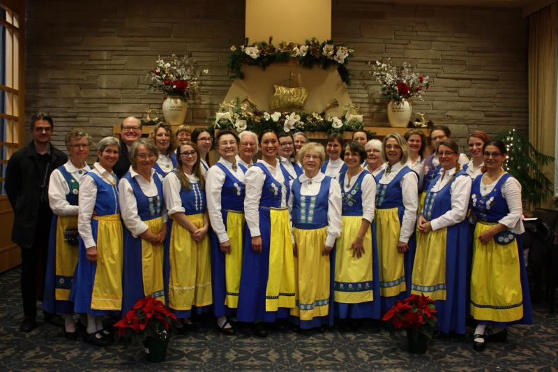
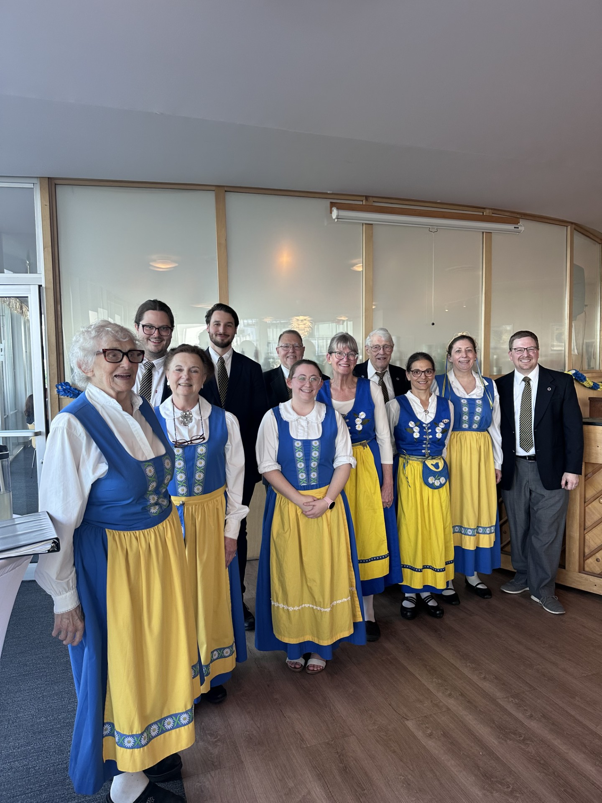

Over a century of Swedish song in Seattle
The Swedish Women's Chorus (founded 1951) and the Svea Male Chorus (founded 1905) joined in 2017 to form the Swedish Singers of Seattle. As a Swedish heritage chorus, our mission is to preserve and promote Swedish choral music. We are proud members of the American Union of Swedish Singers and of the Greater Seattle Choral Consortium.
The oldest active Swedish heritage chorus on the West Coast is formed from the merger of Svenska Klubbens Sångkör and Svenska Gleeklubben. Svea Manskör has also gone by the Svea Men's Chorus and the Svea Male Chorus.


The first American chorus for women only that is devoted primarily to singing in Swedish is founded. The Women's Chorus sings for local Swedish events and travels as far as Canada and Connecticut. In 1968 they tour Sweden and Finland, and in 1980, Sweden and Iceland.
The Svea Men's Chorus and the Swedish Women's Chorus combine ranks to form the Swedish Singers of Seattle. After the departure of longtime director Allan Andrews in 2024, tDirector Dan White and a chorus of around fifteen singers provide music for cultural events at the Swedish Club and surrounding areas.
Come to a rehearsal